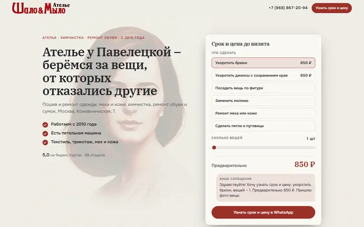
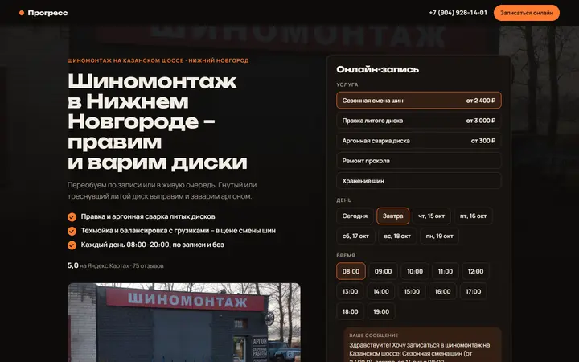
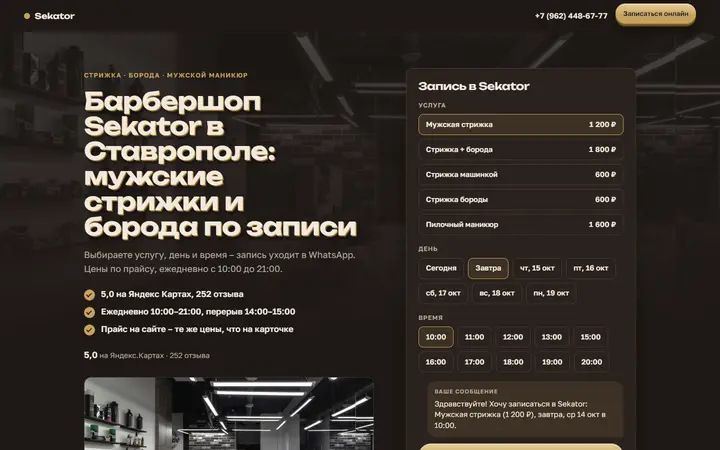
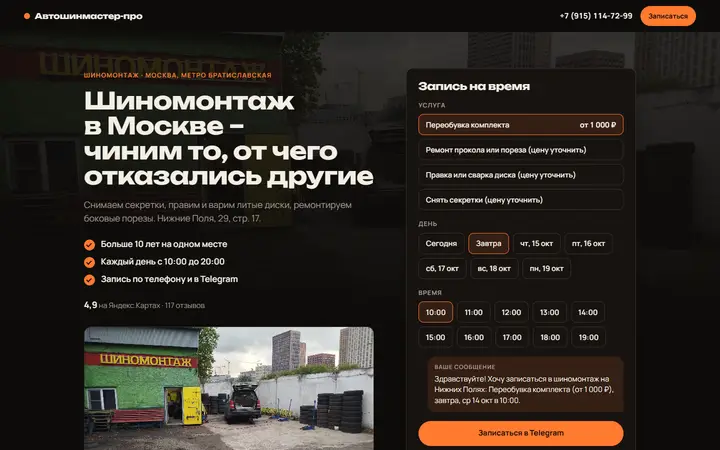
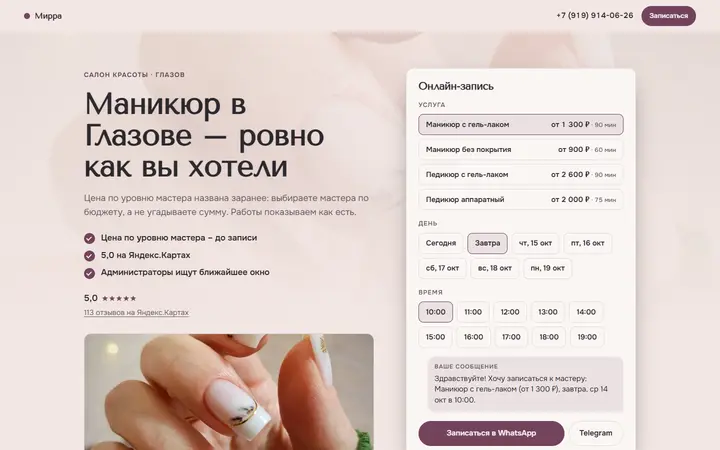
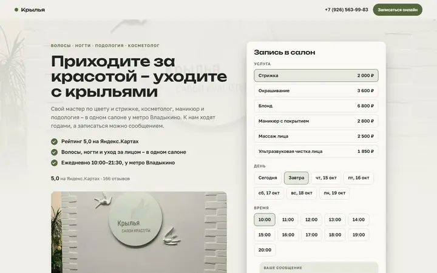
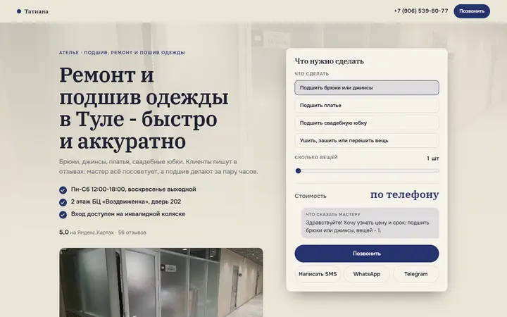
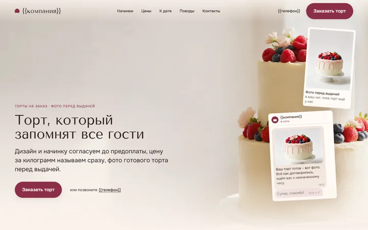
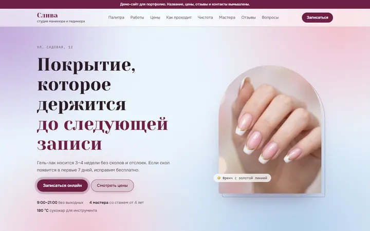

Копилка примеров
Демо-сайты одногруппников – почти все собраны скиллом «Вайб-сайт». У каждого – что стоит подсмотреть для своих сайтов. Коротко всё самое полезное собрано в памятке.
-

Шило&Мыло
Ателье, химчистка, ремонт обуви, Москва
- Калькулятор «Срок и цена до визита»: выбрал вещь и количество – видишь цену, готовое сообщение уходит в WhatsApp.
- Логотип в шапке – поставлен вручную, в настройках сборщика его нет.
- Призыв в конце по делу: «Пришлите фото вещи – ответим сроком и ценой».
-

Прогресс
Шиномонтаж, Нижний Новгород
- Заголовок про то, чего нет у соседей: «правим и варим диски».
- Фото фасада владельца с вывеской на первом экране – хозяин сразу узнаёт своё место.
- Гарантия без выдуманных цифр: «срок и условия скажем при записи».
- В заголовке отключены переносы по слогам – слова не рвутся.
-
Valis
Трикотажная мастерская, Екатеринбург
- Значок «Демо» рядом с названием – владелец сразу видит, что это показ.
- Срок у каждой цены: «Длина брюк – 3–4 дня – 2 200 ₽».
- Звёзды и ссылка на отзывы прямо на первом экране.
- Честная сноска: «Пряжа оплачивается отдельно» – и в калькуляторе «(без пряжи)».
-

Sekator
Барбершоп, Ставрополь
- Свои правки оформления – в отдельном файле стилей: после пересборки ничего не теряется.
- Обед учтён в записи: окна на 14:00 в форме просто нет.
- Ответ из отзывов: «Клиенты пишут о стоянке за шлагбаумом».
- Золотой объёмный заголовок и «живые» кнопки – смело и в тему барбершопа.
-

Автошинмастер-про
Шиномонтаж, Москва, метро Братиславская
- Как найти – по приметам: «зелёное здание с красной вывеской и жёлтой дверью».
- Оффер из узких услуг: секретки, боковые порезы, сварка дисков.
- Метро в строке над заголовком – в большом городе понятнее улицы.
- Шрифты лежат в самом сайте, а не грузятся с Google.
-

Мирра
Салон красоты, маникюр, Глазов
- Цена по уровню мастера: «Юниор 1300, Топ 1700, Vip 2200 ₽» – выбираешь по бюджету.
- Услуги без цены собраны в отдельную группу «Уточнить у салона».
- Обещание со ссылкой на источник: «Инструменты проходят обработку – так пишут клиенты».
- Длительность каждой услуги в форме записи – «90 мин».
-

Крылья
Женский салон, Москва, метро Владыкино
- Верность клиентов – фактом из отзывов: «ходят к Ларисе больше 20 лет».
- Боль клиента его словами: «Цвет без „недодержали“».
- Заголовок раздела цен: «Цены – до записи, а не на кассе».
- Услуги без цены не включены в форму записи – пустых мест нет.
-

Татиана
Ателье в бизнес-центре, Тула
- Путь до двери с фото: вход в БЦ, второй этаж, дверь 202 с табличкой.
- Кнопка «Написать SMS» с готовым текстом – для бизнеса, у которого только телефон.
- Вместо «0 ₽» – «Стоимость: по телефону», а сообщение подписано «Что сказать мастеру».
- Каждое обещание – со ссылкой на отзыв: «подшив за пару часов – так пишут клиенты».
-

Торты на заказ
Кондитерская – свой каркас ниши, без названия и города
- Весь сайт на одном обещании: «фото готового торта перед выдачей» – и на первом экране окошко чата с этим фото.
- Три страха клиента отдельными карточками («не как на картинке», «не успели», «цена выросла») и сразу «Поэтому…».
- Часы, стрелка которых идёт к «вашему часу», пока листаешь страницу, – своя находка поверх «Вайб-сайта».
- Начинки «по срезу» веером, у цены подпись «за кг» или «за штуку», блок «Цена финальная».
-

Слива
Студия маникюра – вымышленная, демо для портфолио; своя вёрстка без «Вайб-сайта», есть копия в Тильде
- Палитра «оттенок + форма ногтя»: выбрала – и в заявке уже написано «Оттенок № 12 „Слива“, форма – миндаль».
- «Как проходит маникюр» – 5 шагов с минутами, и понятно, откуда 120 минут в прайсе.
- Чистота по этапам, а не словом «стерильно»: дезинфекция, ультразвук, сухожар в крафт-пакете, «вскрываем при вас» – с фото.
- Честное демо: полоса «всё вымышлено» сверху и пометка «пример» на каждом отзыве.